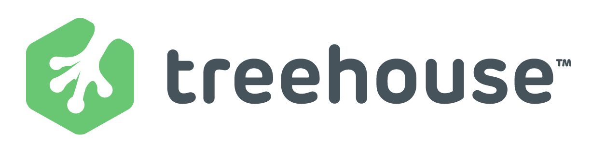

What is CO:de Catalyst?
Recognizing the importance for designers and developers in a 21st century workforce, CO:de Catalyst was created by theCO to spark students interest in technology-related fields and provide the high demand, high wage career skills to students throughout the region.
TheCO is a community of entrepreneurs, tinkerers, engineers, creatives, students and developers encouraging economic growth, business development and coding education in West Tennessee. Founded by five local businessmen: Ben Ferguson, Ben Harris, William Donnell, Drew Ermenc and Barrett Gay, theCO is funded through a combination of private support and LaunchTN, a public initiative created by the State of Tennessee to encourage entrepreneurship and small business ownership.
History of CO:de Catalyst
In June of 2013, the CO:founders attended a startup event in Nashville. There was a session on teaching high school kids to code. Ben (CO:founder) spoke with the rep from Team Treehouse about getting high school kids in Jackson, TN coding. Treehouse uses badges to provide instruction, inspire and reward acheivements, establish and maintain a reputation (the more badges a person has the more he/she knows), and create a learning community.
In early July, they set up a call with Ryan Carson (Treehouse founder) and then approached the local school board. TheCO asked our local Chamber of Commerce for $10,000 to fund the program for the first year. They immediately wrote a check.
On August 14th, 4 public high schools had representatives attend an information meeting with the school superintendent. Everyone loved the idea - especially the students.
On September 12th, the program was approved for implementation. By the end of October, 87 students were in Treehouse and learning to code. TheCO visited each high school to talk with the students and encourage them. The top 6 students and the top teacher would win an expenses paid trip to San Francisco and experience Silicon Valley.
To see videos from the previous trips, check out the prizes page.
Building on the success of 2014, TheCO has expanded the program to include more local high schools from surrounding counties. There are a total of 12 schools planning on participating in the 2015-16 school year.